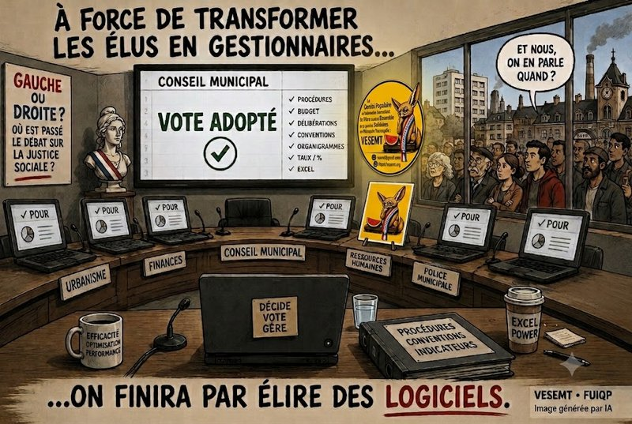

Pendant la campagne des élections municipales, nous avions une idée fixe. Nous répétions, parfois au risque d’agacer :
- Qu’une commune n’était jamais « apolitique ».
- Qu’un budget n’était jamais neutre. Qu’une décision d’urbanisme n’était jamais simplement technique.
- Qu’un recrutement, une subvention, une vente de terrain, une convention d’occupation ou une politique de sécurité racontaient toujours une vision de la société.
Certains nous répondaient que nous « faisions de la politique ».
Nous plaidons coupables.
Parce que la politique municipale… c’est précisément de la politique.
Quelques mois plus tard, nous avons écouté les comptes rendus des conseils municipaux.
Et nous avons retrouvé exactement ce que nous dénoncions pendant la campagne.
La politique n’a pas disparu. Elle s’est déguisée en tableau Excel.
La majorité municipale aime se présenter comme « apolitique ». Le mot est pratique.
Il laisse croire que les décisions seraient simplement dictées par le bon sens.
Une définition assez particulière de l’apolitisme lorsque le Maire revendique, dans le même temps, des engagements publics auprès de David Lisnard
Mais cette tribune ne s’adresse pas à la majorité.
Elle s’adresse à celles et ceux qui sont censés lui répondre.
Parce que, lorsqu’une majorité prétend sortir de la politique, le premier devoir d’une opposition est de la ramener sur le terrain des choix de société.
Or…
À l’écoute des compte-rendus, c’est rarement ce qui se produit.
« Dire qu’on est apolitique, c’est souvent la façon la plus politique d’éviter de dire de quel côté on penche. »
Une opposition sérieuse… mais une politique absente
Personne ne pourra reprocher aux élus de l’opposition de ne pas travailler.
- Ils lisent les dossiers.
- Ils repèrent les erreurs.
- Ils demandent les annexes.
- Ils réclament les comparatifs.
- Ils vérifient les procédures.
- Ils connaissent le Code général des collectivités territoriales.
- Ils soulignent les erreurs de transmission des documents, demandent des reports de vote lorsqu’ils estiment ne pas disposer des éléments suffisants et interpellent la majorité sur la qualité de l’information fournie aux élus.
Tout cela est utile.
Indispensable même.
Mais…
Pour quoi faire ?
Parce qu’à force de contrôler les additions……on finit par oublier de demander qui passe à la caisse.
« Vérifier les additions, c’est utile. Se demander qui paie la note, c’est déjà faire de la politique. »
Former des élus… ou fabriquer des gestionnaires ?
Le débat sur la formation des élus est sans doute l’un des plus révélateur.
L’opposition demande que l’enveloppe budgétaire soit portée au plafond légal afin que chacun puisse bénéficier davantage de formations. La majorité répond que les crédits existants sont déjà peu consommés et rappelle l’existence de formations gratuites proposées par l’AMF ou le Centre de gestion.
Très bien.
Mais personne ne pose la question essentielle.
Former les élus… à quoi ?
- À lire un budget ?
- À remplir une délibération ?
- À maîtriser les procédures ?
- A mieux connaître sa ville, son histoire, ses quartiers et sa population.
Bien sûr.
Mais a-t-on parler pour la « gauche » de former les élus :
- à l’histoire des conquêtes sociales ? A celles dans notre ville?
- aux mécanismes des inégalités ? En général et dans notre ville et agglomération pour mieux décider?
- aux politiques d’austérité imposées aux collectivités ?
- aux rapports entre intérêts privés et intérêt général ?
- aux effets sociaux des politiques publiques ?
Former un élu uniquement au droit, sans valeur, sans deontologie..… c’est comme apprendre à conduire sans jamais lui demander où il veut aller.
On apprend aux élus à lire un budget.Qui leur apprend à lire la société ? et à ne pas se faire porter pâle aux occasions de rencontrer les habitants lors des 2 dernières réunions publiques.
La police… mais jamais l’incendie social
Lorsque deux postes supplémentaires de policiers municipaux sont créés, le débat porte essentiellement sur les effectifs, l’organisation du service et les missions confiées.
Très bien.
Mais pourquoi une commune populaire ressent-elle aujourd’hui ce besoin ?
- Que disent le chômage ?
- La précarité ?
- La disparition des services publics ?
- Les difficultés de la jeunesse ?
- Les fractures sociales ?
- Silence.
On parle des sirènes. Jamais de l’incendie.
« On débat beaucoup des sirènes. Beaucoup moins de l’incendie social qui les fait sonner. »
Les cadres occupent le débat. Les agents disparaissent.
Le recrutement d’un ingénieur hors classe donne lieu à un débat sur son coût, son grade, son positionnement dans l’organigramme. On va même jusqu’à dire qu’à Saint-Pierre-des-Corps, même si la ville a le droit de le faire….Elle doit recruter moins cher, donc moins expérimenté….. Donc moins de qualité pour le service public ? Plus de gauche que ça tu meurs ! Quand bien même tu glisses qu’il y a des effectifs aux Services techniques en moins, alors que le sujet est plus vaste et sûrement pas que Corpopétrussien mais Métropolitain aussi.
Car qui parle des agents municipaux ?
- Des ATSEM ?
- Des agents de la voirie, du ramassage des ordures ménagères
- Des animateurs ?
- Des agents techniques ?
- Des femmes de ménage ?
- De leurs salaires ?
- De leurs conditions de travail ?
- Du recrutement ?
À croire que la pyramide administrative n’aurait plus de base.
« On parle beaucoup des chefs. C’est normal : ceux qui portent les sacs de ciment n’ont pas toujours le temps de prendre le micro. »
Le Soleil éclaire surtout les pourcentages
Le débat sur la convention avec la guinguette Le Soleil est presque caricatural.
L’opposition critique le niveau du loyer : 1,5 %, puis 2 % du chiffre d’affaires.
Très bien.
Mais personne ne pose la question fondamentale.
Pourquoi une activité privée peut-elle créer autant de richesse grâce à un foncier public ?
Quelle part de cette richesse revient à la collectivité ?
Comment cette valeur est-elle redistribuée ?
Qui bénéficie réellement de cette création de richesse ?
À la fin…
On négocie le thermomètre.
On oublie la fièvre.
« On négocie les pourcentages au centime près. Les inégalités, elles, continuent de prospérer gratuitement. »
Les chiffres sont polis
Le Compte financier unique donne lieu à des échanges sur les taux de réalisation, les affectations de résultats, les équilibres budgétaires et les clés de répartition.
Tout cela est parfaitement normal.
Mais derrière les colonnes Excel…
- Qui parle des habitants ?
- Des familles qui renoncent aux vacances ?
- Des retraités qui choisissent entre chauffage et alimentation ?
- Des jeunes qui ne trouvent plus de logement ?
- Des travailleurs pauvres ?
Les chiffres sont impeccables. Les rapports sociaux ont disparu.
« Les chiffres sont polis : ils ne disent jamais qui souffre. »
« On connaît le coût d’un lampadaire. Personne ne calcule le prix d’une jeunesse qui renonce à son avenir. »
Même la mort devient un marché
Les débats sur les concessions funéraires portent sur les tarifs, les comparaisons avec les communes voisines et la disponibilité des documents.
Très bien.
Mais personne ne dit cette évidence.
- Aujourd’hui…Même mourir coûte de plus en plus cher.
- Même le deuil est devenu un marché.
Voilà pourtant une question profondément politique.
Elle disparaît derrière un tableau comparatif.
Le commerce… sans le capitalisme
Lorsque l’opposition évoque les difficultés des commerces de proximité après l’ouverture de Lidl, elle propose la création d’un manager de centre-ville.
Pourquoi pas.
- Mais où est le débat sur la concentration de la grande distribution ?
- Sur les centrales d’achat ?
- Sur la pression exercée sur les producteurs ?
- Le débat sur la transformation du Marché, l’avenir de la ville avec le retournement de la Gare
- Sur la disparition progressive du petit commerce de quartier ? Quand on ne pense que sur l’avenir du « devant chez soi », en Centre-ville
- On soigne les symptômes. Jamais la maladie.
« On cherche un manager pour sauver les vitrines. On cherche encore une politique pour sauver ceux qui les font vivre. »
Le meilleur camouflage de l’idéologie
Pendant la campagne, nous écrivions qu’une commune n’est jamais neutre. Aujourd’hui, nous persistons.
Quand une majorité affirme qu’elle est « apolitique » et que son opposition lui répond presque exclusivement sur le terrain de la gestion…
L’idéologie dominante n’a même plus besoin de se défendre. Elle devient invisible.
« Le meilleur camouflage d’une idéologie, c’est de prétendre qu’on ne fait que de la gestion. »
Notre interpellation
Cette tribune n’est pas un procès.
C’est une invitation. Une invitation à remettre la politique au cœur du débat municipal.
Parce qu’un conseil municipal n’est pas seulement un lieu où l’on vote des délibérations.
C’est le lieu où une ville décide de ce qu’elle veut devenir.
À force de réduire les débats à des questions de procédures, de conventions, de taux, de pourcentages et d’organigramme, on finit par oublier l’essentiel :
Pour qui gouverne-t-on ?
La technique est indispensable.
La gestion est nécessaire.
Mais aucune feuille Excel n’a jamais porté un projet d’émancipation.
Nous continuerons donc à poser les questions qui dérangent.
- Qui possède ?
- Qui décide ? À SPDC et à la Métropole
- Qui travaille ?
- Qui profite ?
- Qui paie ?
Parce qu’une ville populaire mérite mieux qu’une bonne administration.
- Elle mérite une ambition.
- Elle mérite une vision.
- Elle mérite du débat politique.
- Et surtout, elle mérite que l’on parle enfin de celles et ceux qui la font vivre et y vivent.
La dernière question
Pendant la campagne, nous avions choisi une formule qui résume encore aujourd’hui notre démarche : « La neutralité politique n’existe pas. Il n’existe que des choix politiques qui refusent de dire leur nom. »
L’écoute des compte-rendus audio des conseils municipaux ne nous rassurent pas.
Ils nous confortent.
Et nous continuerons donc à défendre une conviction simple :
Une commune populaire ne se gouverne pas seulement avec des débats sur la « forme ». Elle se gouverne avec une idée de la justice sociale.
Et, pour finir sur une note qui parlera à tout le monde :
- « À force de transformer les élus en gestionnaires, on finira par élire des logiciels. Et le pire, c’est qu’ils feront peut-être moins de bugs… mais sûrement pas plus de démocratie. »
- Parce que, quand plus personne ne parle des classes sociales, rassurez-vous : elles, elles continuent de parler de vous… surtout à la fin du mois.
Abd-El-Kader AIT-MOHAMED
- Locataire de la Tour de la Galboisière et « Fier de l’être ».
- Membre du Comité populaire et néanmoins bienveillant de Vivre (surtout) Ensemble et (si possible) Solidaires en Métropole Tourangelle (VESEMT)
- Président de l’Association VESEMT
Commentaires